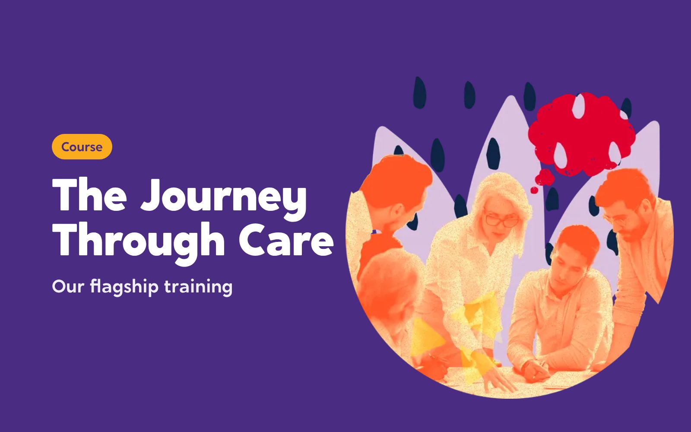
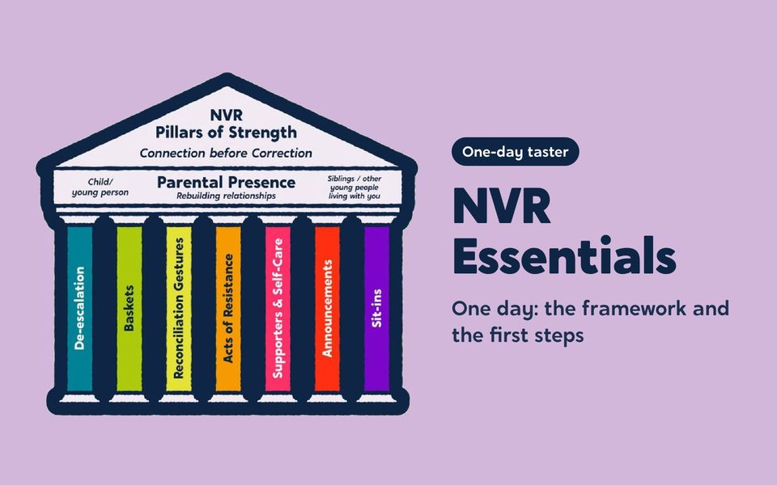
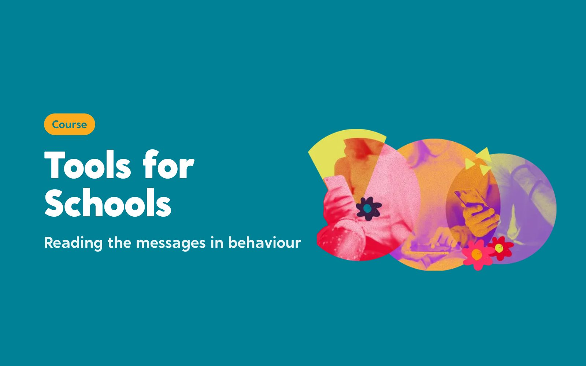

Training your staff will still be talking about a year later
The Care Leaders Learning brings all our training together. Face-to-face courses for your teams, and online learning people can take when it suits them. Every course is built the same way: a real story, the theory behind it, and tools people use the next day.
Every course pairs lived experience of care with professional experience from the field, so the story is real and the practice is sound.


Face to face and online
Two ways to learn, built on the same courses and the same approach.
In the room with your team
Courses we deliver for your staff, in person or live online, as twilight sessions, development days or conference workshops.

The Journey Through CareOur flagship training: the care journey, session by session, through one child’s story.Find out more
NVR EssentialsA one-day introduction to non-violent resistance for residential and fostering teams.Find out moreA guide to good recordingTraining and a workbook for anyone who writes about children known to children’s social care.Find out more
Tools for SchoolsA twilight session on reading the messages in children’s behaviour, and what to do next.Find out moreWhen it suits your staff
Learning people take at their own pace, on their own or as a whole team, with CPD certificates.

How we teach
Every course and keynote follows the same spine.
Lived experience opens every session, alongside professional experience from the field. It makes the subject real and gets people listening.
The evidence underneath gives the learning rigour.
Practical tools mean people leave able to do something differently the next day.
For whole teams and organisations
Most of our learning is bought by organisations for their people: virtual schools for their schools, fostering services for their carers, councils for their workforce. Teams of five or more can learn together on the platform, and whole organisations can take a licence. Ask us what fits.
Previous work
Training we’ve delivered for councils and schools.

Virtual School Kent: A Tool for Change
One child’s story, three cohorts, a county’s schools. Around 490 staff trained, and 124 of 125 said the first session met its objectives.
Read the case study
Durham County Council: NVR in residential care
Non-violent resistance in 11 children’s homes. 120 residential staff trained.
Read the case study
Middlesbrough Council: PROCLAIM
Making a town-wide trauma-informed schools programme heard. 337 staff signed up to the training platform and 128 CPD certificates were issued.
Read the case study
Stockport Council: Referral and profile training
Training foster carers and social workers to write and read about children differently, mapped to five fostering standards.
Read the case study
Darlington Virtual School: Designated Leaders
The training designated teachers designed for themselves. 8 designated teachers co-designed a 10-month programme.
Read the case study